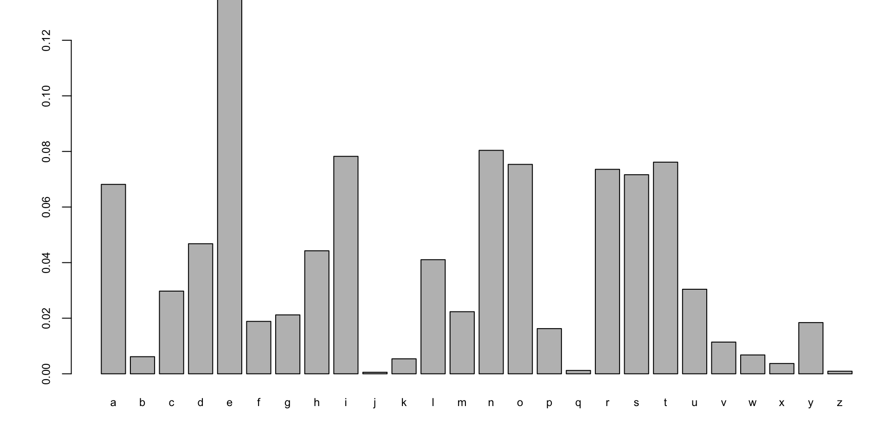
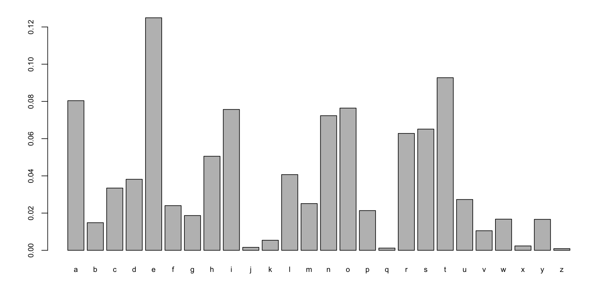

Code
graph LR
1 --0.5--> 1
1 --0.25--> 2
1 --0.25--> 3
2 --0.2--> 1
2 --0.1--> 2
2 --0.7--> 3
3 --0.25--> 2
3 --0.25--> 1
3 --0.5--> 3
Unit 6: Markov Chain Monte Carlo
Vadim Sokolov
George Mason University
Spring 2025
Suppose that \(X \sim F_X ( x )\) and let \(Y = g (X)\).
How do we find \(F_Y ( y )\) and \(f_Y ( y )\) ?
Given a uniform \(U\), how do we find \(X= g(U)\)?
We need to find \(f_{(U,V)} ( u , v )\) from \(f_{X,Y}(x,y)\)
The cdf identity gives \[ F_Y ( y) = \mathbb{P} ( Y \leq y ) = \mathbb{P} ( g( X) \leq y ) \]
\[ F_Y ( y ) = \int_{ g( x) \leq y } f_X ( x ) dx \]
If \(g\) is decreasing \(F_Y ( y ) = P( X \geq g^{-1} ( y ) ) = 1 - F_X ( g^{-1} ( y ) )\)
\[ f_Y ( y) = f_X ( g^{-1} ( y ) ) \left | \frac{ d}{dy} g^{-1} ( y ) \right | \] There’s also a multivariate version of this that we’ll see later.
Suppose \(X\) is a continuous rv, what’s the pdf for \(Y = X^2\)?
Let \(X \sim N ( 0 ,1 )\), what’s the pdf for \(Y = X^2\)?
theorem Suppose that \(U \sim U[0,1]\), then for any continuous distribution function \(F\), the random variable \(X= F^{-1} (U)\) has distribution function \(F\).
\[ \mathbb{P} \left (X \leq x \right )= \mathbb{P} \left ( F^{-1} (U) \leq x \right )= \mathbb{P} \left ( U \leq F(x) \right )=F(x) \] Hence, \(X = F_X^{-1}(U)\).
Sometimes thare are short-cut formulas to generate random draws
Normal \(N(0,I_2)\): \(x_1,x_2\) uniform on \([0,1]\) then \[ \begin{aligned} y_1 = & \sqrt{-2\log x_1}\cos(2\pi x_2)\\ y_2 = & \sqrt{-2\log x_1}\sin(2\pi x_2) \end{aligned} \]
An important application is how to transform multiple random variables?
\[ ( X , Y ) \sim f_{ X , Y} ( x , y ) \] A transformation of interest given by: \[ U = g ( X , Y ) \; \; {\rm and} \; \; V = h ( X , Y ) \]
\[ J = \frac{ \partial ( x , y ) }{ \partial ( u , v ) } = \left | \begin{array}{cc} \frac{ \partial x }{ \partial u} & \frac{ \partial x }{ \partial v} \\ \frac{ \partial y }{ \partial u} & \frac{ \partial y }{ \partial v} \end{array} \right | \]
\[ f_{ U , V } ( u , v ) = f_{ X , Y} ( h_1 ( u , v ) , h_2 ( u , v ) ) \left | \frac{ \partial ( x , y ) }{ \partial ( u , v ) } \right | \] The last term is the Jacobian.
This can be calculated in two ways.
\[ \left | \frac{ \partial ( x , y ) }{ \partial ( u , v ) } \right | = 1 / \left | \frac{ \partial ( u , v ) }{ \partial ( x , y ) } \right | \]
\[ \mathbb{P} \left ( g( X ) \geq c \right ) \leq \frac{ \mathbb{E} ( g(X) ) }{c } \; \; {\rm where} \; \; g( X) \geq 0 \]
\[ \mathbb{P} \left ( | X - \mu | \geq c \right ) \leq \frac{ Var(X) }{c^2 } \]
\[ \mathbb{E} \left ( \phi ( X ) \right ) \leq \phi \left ( \mathbb{E}( X ) \right ) \]
Chebyshev follows from Markov. Mike Steele and Cauchy-Schwarz.
Let \(f\) be non-decreasing \[ \begin{aligned} P ( Z > t ) &= P ( f(Z) \geq f(t) ) \\ & = E \left ( \mathbb{I} ( f( Z) \geq f(t ) ) \right ) \\ & \leq E \left ( \mathbb{I} ( f( Z) \geq f(t ) ) \frac{f(Z)}{f(t) } \right ) \\ & = E\left ( \frac{f(Z)}{f(t) } \right ) \end{aligned} \]
Law of Large Numbers \[ \lim_{ n \rightarrow \infty } \mathbb{P} \left ( | Z - E(Z) | > n \epsilon \right ) = 0 \; \; \forall \epsilon > 0 \]
Central Limt Theorem (CLT) \[ \lim_{ n \rightarrow \infty } \mathbb{P} \left ( n^{- 1/2} ( | Z - E(Z) | ) > \epsilon \right ) = \Phi ( x ) \]
Posterior Concentration
Let \(Z= \sum_{i=1}^n X_i\).
Hoeffding \[ P ( Z > E(Z) + t ) \leq \exp \left ( - \frac{ t^2}{2n} \right ) \]
Bernstein \[ P ( Z > E(Z) + t ) \leq \exp \left ( - \frac{ t^2}{ 2 ( Var(Z) + t/3 ) } \right ) \] Large Deviations (Varadhan)
See Common Distributions
Bernoulli and Binomial
Hypergeometric
Poisson
Negative Binomial
Normal Distribution
Gamma Distribution
Beta Distribution
Multinomial Distribution
Bivariate Normal Distribution
Wishart Distribution
\(\ldots\)
\[ p( X_n , X_{n-1} , \ldots , X_1 ) = p( X_n | X_{n-1} , \ldots , X_1 ) \ldots p( X_2 | X_1 ) p( X_1 ) \]
\[ p( X_n | X_{n-1} , \ldots , X_1 ) = p( X_n | X_{n-1} ) \]
Are stock returns a random walk?
Hidden Markov Models (Baum-Welch, Viterbi)
Build a hidden Markov model to predict the ups and downs.
Suppose that stock market returns on the next four days are \(X_1 , \ldots , X_4\).
Let’s empirical determine conditionals and marginals
Marginal and Bivariate Distributions
| \(x\) | Down | Up |
|---|---|---|
| \(P( X_i ) = x\) | 0.474 | 0.526 |
| \(X_i\) | Down | Up |
|---|---|---|
| \(X_{i-1} = Down\) | 0.519 | 0.481 |
| \(X_{i-1} = Up\) | 0.433 | 0.567 |
| \(X_{i-2}\) | \(X_{i-1}\) | Down | Up |
|---|---|---|---|
| Down | Down | 0.501 | 0.499 |
| Down | Up | 0.412 | 0.588 |
| Up | Down | 0.539 | 0.461 |
| Up | Up | 0.449 | 0.551 |
Joint because more than one variable \(( X_2 , X_3 )\), marginal because it ignores \(X_4\) and conditional because its given \(X_1\).
Under Markov dependence \[ \begin{aligned} P( UUD ) & = p( X_1 = U) p( X_2 = U | X_1 = U) p( X_3 | X_2 = U , X_1 = U ) \\ & = ( 0.526 ) ( 0.567 ) ( 0.433) \end{aligned} \]
Under independence we would have got \[ \begin{aligned} P(UUD) & = P( X_1 = U) p( X_2 = U) p( X_3 = D ) \\ & = (.526)(.526)(.474) \\ & = 0.131 \end{aligned} \]
\(52! \approx 10^{68}\)
slightly less then number of particles in the observed universe (\(10^{80}\)).
\[ p(\theta \mid X,Y) = \dfrac{p(Y \mid \theta,X)p(\theta)}{\int p(Y \mid \theta,X)p(\theta)d\theta}. \]
\[ \begin{split} \widehat{E}\left( f\left( \theta\right) \mid X,Y\right)&=G^{-1}\sum_{g=1}^{G}f\left( \theta ^{\left( g\right) }\right)\\ & \approx \int f\left( \theta\right) p\left( \theta \mid X,Y\right)d\theta=E\left( f\left( \theta\right) \mid X,Y\right). \end{split} \]
\[ P(X_{k+1} = i \mid X_k = j) = p_{ij}. \]
The mixing time of the Markov chain is given by \[ T=\dfrac{1}{\log(1/\lambda_2)} \] It is roughly, number of steps over which deviation from equilibrium distribution decreases by factor \(e\).
graph LR
1 --0.5--> 1
1 --0.25--> 2
1 --0.25--> 3
2 --0.2--> 1
2 --0.1--> 2
2 --0.7--> 3
3 --0.25--> 2
3 --0.25--> 1
3 --0.5--> 3
Check that it is column-stochastic
Let’s start with a random vector \(x = (1, 0, 0)\) and iterate \(x \leftarrow P x\) for \(n=10\) steps.
We can compare the results to the eigenvector calculated using built-in (QR decomposition-based) method
| Eigenvector | Power iterations |
|---|---|
| 0.32 | 0.32 |
| 0.22 | 0.22 |
| 0.46 | 0.46 |
Power iterations convergence to eigenvector. Each color corresponds to a component of the eigenvector (stationary distribution vector)
We can also find the stationary distribution by doing a simple random walk on the graph.
Now, we plot the fraction of time that we were in each state over time:
library(jsonlite)
# http://norvig.com/mayzner.html
bg = read_json("data/bigrams.json", simplifyVector=T)
nbg = nrow(bg)
bgm = matrix(0,nrow=26,ncol=26)
rownames(bgm) = letters; colnames(bgm) = letters
for (i in 1:nbg) { # from j to i
idx = match(unlist(strsplit(bg[i,1], split="")), letters)
bgm[idx[2],idx[1]] = as.numeric(bg[i,2])
}
# View(bgm)
bgm = bgm %*% diag(1/colSums(bgm))
image(bgm, axes=FALSE)
axis(3, at=seq(0,1, length=26), labels=letters)
axis(2, at=seq(1,0, length=26), labels=letters)


Individual Letter Frequencies
General case balance condition: \[ \pi_i p_{ij} = \pi_j p_{ji}, ~ i,j=1,\ldots,n, \] from which follows that \[ \sum_i p_{ij}\pi_i = \pi_j \sum_i p_{ji} = \pi_j,~j=1,\ldots,n. \]
Thus we need to find a Markov chain in which the transition probabilities satisfy the detailed balance condition (symmetry). Another way to write the condition is \[ \dfrac{p_{ij}}{p_{ji}} = \dfrac{\pi_j}{\pi_i}. \] Say we have some “teaser” transition probabilities \(p_{ij}^0\) and we assume those are symmetric. We want to find new probabilities \(p_{ij} = p_{ij}^0b_{ij}, ~ i\ne j\) and \(p_{ii} = 1 - \sum_{j:~j\ne i} p_{ij}\). We need to choose \(b_{ij}\) is such a way so that \[ \dfrac{p_{ij}}{p_{ji}} = \dfrac{p_{ij}^0b_{ij}}{p_{ji}^0b_{ji}} = \dfrac{b_{ij}}{b_{ji}} = \dfrac{\pi_j}{\pi_i} \] We can choose \[ b_{ij} = F\left(\dfrac{\pi_j}{\pi_i}\right) \]
For the detailed balance condition to be satisfied, we need to choose \(F: R_+ \rightarrow [0,1]\) such that \[ \dfrac{F(z)}{F(1/z)} = z. \]
An example of such a function is \(F(z) = \min(z,1)\). This leads to the Metropolis algorithm
When move happens, we say step is accepted, otherwise it is rejected. In a more general case (Metropolis-Hastings), when \(p^0\) is not symmetric, we calculate \[ a_{ij} = \min\left(1,\dfrac{\pi_i p^0_{ji}}{\pi_j p^0_{ji}}\right). \]
In the continuous case we use variables \(S\) and \(T\) instead induces \(i\) and \(j\). The detailed balance condition becomes \[ \pi(S)p(T \mid S) = \pi(T)p(S \mid T). \] Then \[ \int p(T \mid S)\pi(S)dS = \int p(S \mid T)\pi(T)dS = \pi(T)\int p(S\mid T)dS = \pi(T). \]
The following conditions \[ \forall S, \forall T:\pi(T)\ne 0:p(T \mid S) >0 \] are sufficient to guarantee uniqueness of \(\pi(T)\).
Specifically, the MH algorithm repeats the following two steps \(G\) times: given \(\theta ^{\left( g\right) }\) \[ \begin{aligned} &\text{Step 1. Draw }\theta^{\prime} \text{ from a proposal distribution,} p(\theta^{\prime}|\theta ^{(g)}) \\ &\text{Step 2. Accept } \theta^{\prime} \text{ with probability } \alpha \left(\theta ^{(g)},\theta^{\prime}\right) \text{,} \end{aligned} \] where \[ \alpha \left( \theta ^{(g)},\theta^{\prime}\right) =\min \left( \frac{\pi(\theta^{\prime})}{\pi (\theta ^{(g)})}\frac{q(\theta^{(g)}|\theta^{\prime})}{q(\theta^{\prime}|\theta ^{(g)})},1\right) \text{.} \]
Implementation of the accept-reject step:
One special case draws a candidate independently of the previous state, \(q(\theta^{\prime}|\theta ^{(g)})=q(\theta^{\prime})\). In this independence MH algorithm, the acceptance criterion simplifies to \[ \alpha \left( \theta ^{(g)},\theta^{\prime}\right) =\min \left( \frac{\pi (\theta^{\prime})}{\pi (\theta ^{(g)})}\frac{q(\theta ^{(g)})}{q(\theta ^{\prime})},1\right). \] Even though \(\theta\) is drawn independently of the previous state, the sequence generated is not being independent, since \(\alpha\) depends on previous draws. The criterion implies a new draw is always accepted if target density ratio \(\pi (\theta^{\prime})/\pi (\theta ^{(g)})\), increases more than the proposal ratio, \(q(\theta ^{(g)})/q(\theta^{\prime})\). When this is not satisfied, a balanced coin is flipped to decide whether or not toaccept the proposal.
Random-walk (RW) Metropolis is the polar opposite of the independence MH algorithm. It draws a candidate from the following RW model, \[ \theta^{\prime}=\theta ^{\left( g\right) }+\sigma \varepsilon _{g+1}, \] where \(\varepsilon _{t}\) is an independent, mean zero, and symmetric error term, typically taken to be a normal or \(t-\)distribution, and \(\sigma\) is a scaling factor. The algorithm must be tuned via the choice of \(\sigma\), the scaling factor. Symmetry implies that \[ q\left( \theta^{\prime}|\theta ^{\left( g\right) }\right) =q\left( \theta ^{\left( g\right) }|\theta^{\prime}\right), \] and \[ \alpha \left( \theta ^{(g)},\theta^{\prime}\right) =\min \left( \pi (\theta^{\prime})/\pi (\theta ^{(g)}),1\right). \]
set.seed(7)
mh = function(target, proposal, n, x0) {
x = x0; p = length(x0)
samples = matrix(NA, nrow=n, ncol=p)
accept = rep(0, n)
for (i in 1:n) {
x_new = proposal(x)
a = min(1,target(x_new) / target(x))
# print(c(x, x_new, a))
if (runif(1) < a) {accept[i]=1; x = x_new}
samples[i,] = x
# print(accept[i])
}
list(samples = samples, accept = accept)
}We apply MCMC to the weighted sum of two normal distributions. This sort of distribution is fairly straightforward to sample from, but let’s draw samples with MCMC.
set.seed(92)
library(ggplot2)
# Metropolis-Hastings for Bivariate Normal distribution
# Target distribution
mu = c(0, 0)
sigma = matrix(c(1, 0.5, 0.5, 1), 2, 2)
target = function(x) exp(-0.5*t(x-mu) %*% solve(sigma) %*% (x-mu))
library(mixtools)
ellipse(mu, sigma, npoints = 1000, newplot = TRUE)
proposal = function(x) x + rnorm(2, 0, .5)
n = 5000 # Number of samples
x = c(0, 0)
samples = matrix(0, n, 2)
for (i in 1:n) {
x_new = proposal(x)
a = target(x_new) / target(x)
if (i<50) {
if (runif(1) > a) {arrows(x[1], x[2], x_new[1], x_new[2], col= 'red')} else {arrows(x[1], x[2], x_new[1], x_new[2], col= 'green'); x = x_new}
}
if (runif(1) < a) x = x_new
samples[i,] = x
}Paths of random samples generated by Metropolis algorithm. Red are the rejected steps and green are accepted ones
CH: \(p\left( \theta_1,\theta_2\right)\) is determined by \(p\left( \theta_{1} \mid \theta_{2}\right)\) and \(p\left( \theta_{2} \mid \theta_{1}\right)\), given \(p\left( \theta_{1},\theta_2\right)\), \(p\left( \theta_{1}\right)\) and \(p\left( \theta_{2}\right)\) have positive mass for all points
For any pairs \((\theta_{1},\theta_{2})\) and \((\theta_1^{\prime},\theta_2^{\prime})\), \[ \frac{p(\theta_1,\theta_2)}{p(\theta_1^{\prime},\theta_2^{\prime})}=\frac{p(\theta_1 \mid \theta_2^{\prime})p(\theta_2 \mid \theta_1)}{p\left( \theta_1^{\prime} \mid \theta_2^{\prime}\right) p\left( \theta_2^{\prime} \mid \theta_2\right) }. \] The proof uses the fact that \(p\left( \theta_1,\theta_2\right)=p\left( \theta_2 \mid \theta_1\right) p\left( \theta_1\right)\) (applied to both \((\theta_1,\theta_2)\) and \((\theta_1^{\prime},\theta_2^{\prime})\)) and the Bayes rule: \[ p\left( \theta_1\right) =\frac{p\left( \theta_1 \mid \theta_2^{\prime }\right) p\left( \theta_2^{\prime}\right) }{p\left( \theta_2^{\prime} \mid \theta_1\right) }\text{.} \]
In the case of \(p\left( \theta_1,\theta_2\right)\), given current draws,\(\left( \theta_1^{\left( g\right) },\theta_2^{\left( g\right)}\right)\), the Gibbs sampler consists of \[ \begin{aligned} \text{1. Draw }\theta_1^{\left( g+1\right) } &\sim &p\left( \theta _1|\theta_2^{\left( g\right) }\right) \\ \text{2. Draw }\theta_2^{\left( g+1\right) } &\sim &p\left( \theta_2|\theta_1^{\left( g+1\right) }\right) , \end{aligned} \] repeating \(G\) times.
It is easy to verify that the stationary distribution of the Markov chain generated by the Gibbs sampler is the posterior distribution, \(\pi \left(\theta \right) =p\left( \theta_1,\theta_2\right)\): \[ \begin{aligned} \int p\left( \theta ,\theta^{\prime}\right) d\theta &=&p\left( \theta_2^{\prime}|\theta_1^{\prime }\right) \int_{\theta_2}\int_{\theta_1}p\left( \theta_1^{\prime}|\theta_2\right) p\left( \theta_1,\theta_2\right) d\theta_{1}d\theta_2 \\ &=&p\left( \theta_2^{\prime}|\theta_1^{\prime}\right) \int_{\theta_2}p\left( \theta_1^{\prime}|\theta_2\right) p\left( \theta_{2}\right) d\theta_2 \\&=&p\left( \theta_2^{\prime}|\theta_1^{\prime}\right) p\left( \theta_{1}^{\prime}\right) =p\left( \theta_1^{\prime},\theta_2^{\prime}\right) =\pi \left( \theta^{\prime}\right) \text{.} \end{aligned} \]
The ergodic theorem holds: for a sufficiently integrable function \(l\) and for all starting points \(\theta ,\) \[ \underset{G\rightarrow \infty }{\lim }\frac{1}{G}\sum_{g=1}^{G}f\left(\theta ^{\left( g\right) }\right) =\int f\left( \theta \right) \pi \left(\theta \right) d\theta =E\left[ f\left( \theta \right) \right] \] - Run for an initial length, often called the burn-in - Then a secondary sample of size \(G\) is created for Monte Carlo inference
# summary statistics of sample
n <- 30
ybar <- 15
s2 <- 3
# sample from the joint posterior (mu, tau | data)
mu <- tau <- rep(NA, 11000)
T <- 1000 # burnin
tau[1] <- 1 # initialisation
for(i in 2:11000)
{
mu[i] <- rnorm(n = 1, mean = ybar, sd = sqrt(1 / (n * tau[i - 1])))
tau[i] <- rgamma(n = 1, shape = n / 2, scale = 2 / ((n - 1) * s2 + n * (mu[i] - ybar)^2))
}
mu <- mu[-(1:T)] # remove burnin
tau <- tau[-(1:T)] # remove burnin
hist(mu)Given a partition of the vector \(\theta\) via CH, a hybrid MCMC algorithm updates the chain one subset at a time, either by direct draws (Gibbs steps) or via MH. - Thus, a hybrid algorithm combines the features of the MH algorithm and the Gibbs sampler, providing significant flexibility in designing MCMC algorithms for different models.
\(p\left( \theta_2|\theta_1\right)\) is recognizable and can be directly sampled.
\(p\left( \theta_1|\theta_2\right)\) can only be evaluated and not directly sampled.
MH accept/reject based on \[ \alpha \left( \theta_1^{(g)},\theta_1^{\prime}\right) =\min \left( \frac{p\left( \theta_1^{\prime}|\theta_2^{\left( g\right) }\right) }{p\left( \theta_1^{\left ( g \right ) }|\theta_2^{\left( g\right) }\right) }\frac{q\left( \theta_1^{\left( g\right) }|\theta_1^{\prime},\theta_2^{\left( g\right) }\right) }{q\left( \theta_1^{\prime}|\theta_1^{\left( g\right) },\theta _2^{\left( g\right) }\right) },1\right) . \]
The general hybrid algorithm is as follows. Given \(\theta_1^{\left(g\right) }\) and \(\theta_2^{\left( g\right) }\), for \(g=1,\ldots, G\), \[ \begin{aligned} 1.\text{ Draw }\theta_1^{\left( g+1\right) } &\sim &MH\left[ q\left( \theta_1|\theta_1^{\left( g\right) },\theta_2^{\left( g\right) }\right) \right] \\ 2.\text{ Draw }\theta_2^{\left( g+1\right) } &\sim &p\left( \theta_2|\theta_1^{\left( g+1\right) }\right) . \end{aligned} \] In higher dimensional cases, a hybrid algorithm consists of any combination of Gibbs and Metropolis steps. Hybrid algorithms significantly increase the applicability of MCMC methods, as the only requirement is that the model generates posterior conditionals that can either be sampled or evaluated.
We can simulate the evolution over time of the Hamiltonian dynamics of this system via the “leapfrog” integrator, which proceeds according to the updates \[ \begin{aligned} r^{+/2} & = r + (\epsilon/2) \nabla_{\theta}L(\theta) \\ \theta^{+} & = \theta + (\epsilon/2) r^{+/2}\\ r^{+} & = r^{+/2} + (\epsilon/2)\nabla_{\theta}L(\theta^{+}). \end{aligned} \]
We consider the following model: \[\begin{align*} \tau &\sim \mathrm{Gamma}(0.5, 0.5) \\ \lambda_d &\sim \mathrm{Gamma}(0.5, 0.5) \\ \beta_d &\sim \mathcal{N}(0, 20) \\ y_n &\sim \mathrm{Bernoulli}(\sigma((\tau \lambda \odot \beta)^T x_n))), \end{align*}\]
(150, 5) sepal.length sepal.width petal.length petal.width variety
0 5.1 3.5 1.4 0.2 Setosa
1 4.9 3.0 1.4 0.2 Setosa
2 4.7 3.2 1.3 0.2 Setosa
3 4.6 3.1 1.5 0.2 Setosa
4 5.0 3.6 1.4 0.2 Setosa(150, 2)For Hamiltonian MC, we only need to evaluate the joint log-density pointwise
def joint_log_prob(x, y, tau, lamb, beta):
lp = tfd.Gamma(0.5, 0.5).log_prob(tau)
lp += tfd.Gamma(0.5, 0.5).log_prob(lamb).sum()
lp += tfd.Normal(0., 20).log_prob(beta).sum()
logits = x @ (tau * lamb * beta)
lp += tfd.Bernoulli(logits).log_prob(y).sum()
return lp
tau = np.random.rand(1)[0]
lamb = np.random.rand(2)
beta = np.random.rand(2)
joint_log_prob(x, y, tau, lamb, beta)Array(-124.43358, dtype=float32)\[ z\triangleq T^{-1}(\theta),\qquad \pi(z) = \pi(\theta) \left| \frac{\partial T}{\partial z} (z) \right|, \]
Taking the logarithm of both sides, we get \[ \log \pi(z) = \log \pi(\theta) + \log \left| \frac{\partial T }{\partial z}(z) \right| \] Use \(T(z)=e^z\), and \(\log|\frac{\partial T}{\partial z}(z)| = z\)
def unconstrained_joint_log_prob(x, y, theta):
ndims = x.shape[-1]
unc_tau, unc_lamb, beta = jnp.split(theta, [1, 1 + ndims])
unc_tau = unc_tau.reshape([])
# Make unc_tau a scalar
tau = jnp.exp(unc_tau)
ldj = unc_tau
lamb = jnp.exp(unc_lamb)
ldj += unc_lamb.sum()
return joint_log_prob(x, y, tau, lamb, beta) + ldjdef leapfrog_step(target_log_prob_and_grad, step_size, i, leapfrog_state):
z, m, tlp, tlp_grad = leapfrog_state
m += 0.5 * step_size * tlp_grad
z += step_size * m
tlp, tlp_grad = target_log_prob_and_grad(z)
m += 0.5 * step_size * tlp_grad
return z, m, tlp, tlp_grad
def hmc_step(target_log_prob_and_grad, num_leapfrog_steps, step_size, z, seed):
m_seed, mh_seed = jax.random.split(seed)
tlp, tlp_grad = target_log_prob_and_grad(z)
m = jax.random.normal(m_seed, z.shape)
energy = 0.5 * jnp.square(m).sum() - tlp
new_z, new_m, new_tlp, _ = jax.lax.fori_loop(
0,
num_leapfrog_steps,
partial(leapfrog_step, target_log_prob_and_grad, step_size),
(z, m, tlp, tlp_grad))
new_energy = 0.5 * jnp.square(new_m).sum() - new_tlp
log_accept_ratio = energy - new_energy
is_accepted = jnp.log(jax.random.uniform(mh_seed, [])) < log_accept_ratio
# select the proposed state if accepted
z = jnp.where(is_accepted, new_z, z)
hmc_output = {"z": z,
"is_accepted": is_accepted,
"log_accept_ratio": log_accept_ratio}
# hmc_output["z"] has shape [num_dimensions]
return z, hmc_output
def hmc(target_log_prob_and_grad, num_leapfrog_steps, step_size, num_steps, z,
seed):
# create a seed for each step
seeds = jax.random.split(seed, num_steps)
# this will repeatedly run hmc_step and accumulate the outputs
_, hmc_output = jax.lax.scan(
partial(hmc_step, target_log_prob_and_grad, num_leapfrog_steps, step_size),
z, seeds)
# hmc_output["z"] now has shape [num_steps, num_dimensions]
return hmc_output
def scan(f, state, xs):
output = []
for x in xs:
state, y = f(state, x)
output.append(y)
return state, jnp.stack(output)[-14.41534266 -1.4132225 -5.69631028][17.03002386 37.44243698 26.76435947]26.635332 -6.905437We will use the Normal-Normal model with kown variance and unknowm mean \[ \begin{aligned} \mu \sim & \mathrm{Normal}(0,1) \\ x\mid \mu \sim & \mathrm{Normal}(\mu,1) \end{aligned} \]
n =20
data= sort(rnorm(n,0))
# hist(data)
samples = 15000
proposal_width = 0.5
mu_current = 0
sigma = 1
mu0 = 0
sigma0 = 1
posterior = c(mu_current)
for (i in 1:samples) {
mu_proposal = rnorm(1,mu_current, proposal_width)
likelihood_current = prod(dnorm(data,mu_current, sigma))
likelihood_proposal = prod(dnorm(data,mu_proposal, sigma))
prior_current = dnorm(mu_current,mu0, sigma0)
prior_proposal = dnorm(mu_proposal,mu0, sigma0)
p_current = likelihood_current * prior_current
p_proposal = likelihood_proposal * prior_proposal
# Accept proposal?
p_accept = p_proposal / p_current
accept = (runif(1) < p_accept)
if (accept) {
mu_current = mu_proposal
posterior = c(posterior,mu_current)
}
}
posterior = posterior[-(1:500)]
plot(posterior, pch=16)[1] "Analytical mean: 0.03. MCMC Mean: 0.03"[1] "Analytical sd: 0.22. MCMC sd: 0.23"library(brms)
d = data.frame(y=data, sigma0=rep(1,20))
fit <- brm(data = d,
family = gaussian,
y | se(sigma0) ~ 1,
prior = c(prior(normal(0, 1), class = Intercept)),
iter = 1000, refresh = 0, chains = 4)
posterior = as_draws_array(fit, variable = "b_Intercept")
hist(posterior, freq = F, breaks=30, ylim=c(0,2), main="Posterior Mean")
lines(density(posterior), ylim=c(0,2), main="Posterior Mean")
lines(x,dpost, type='l', lwd=3, col='red')MH is very simple and quite general. At the same time
Sampling high-dimensional distributions with MH becomes very inefficient in practice. A more efficient scheme is called Hamiltonian Monte Carlo (HMC).